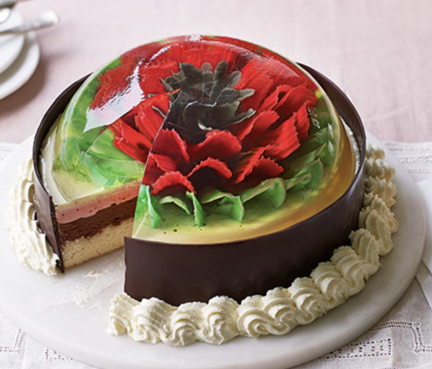
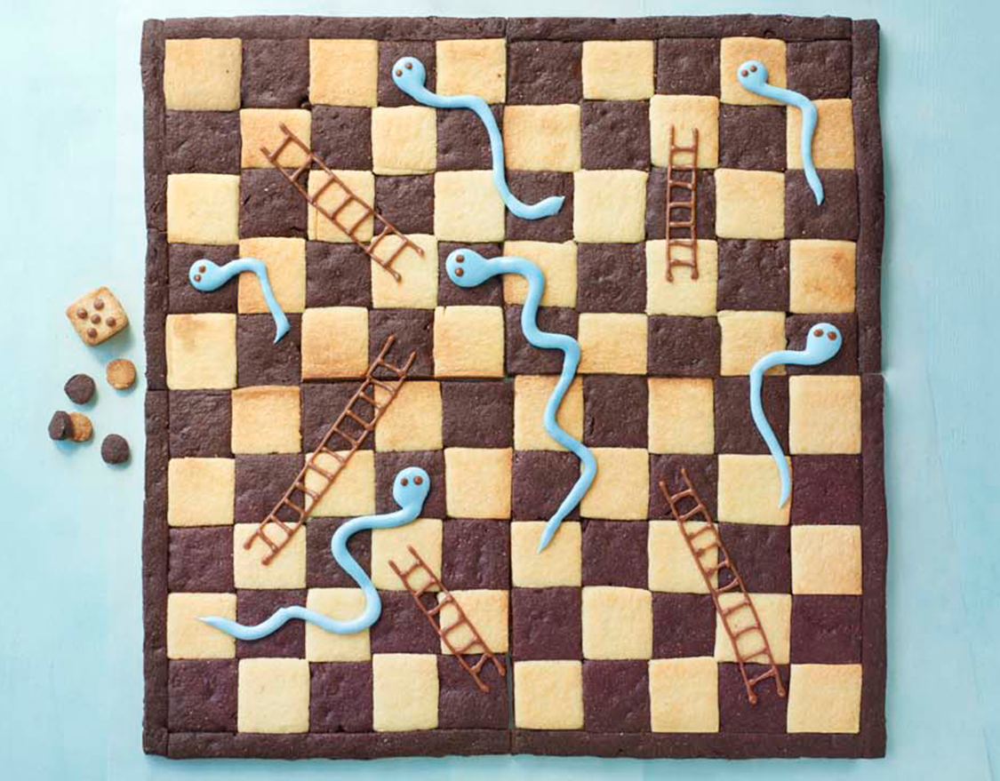
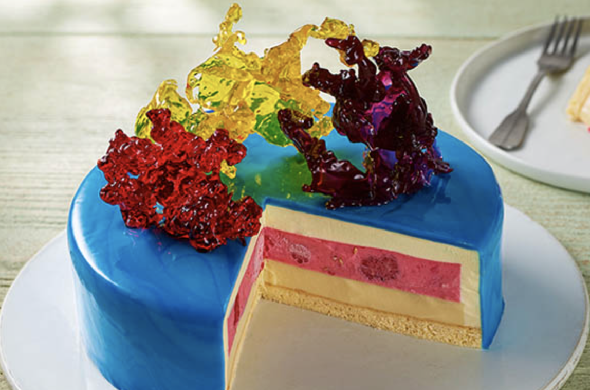
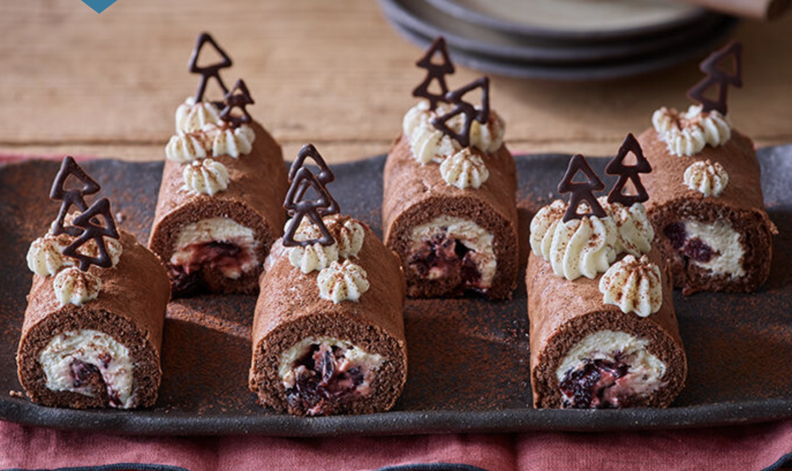
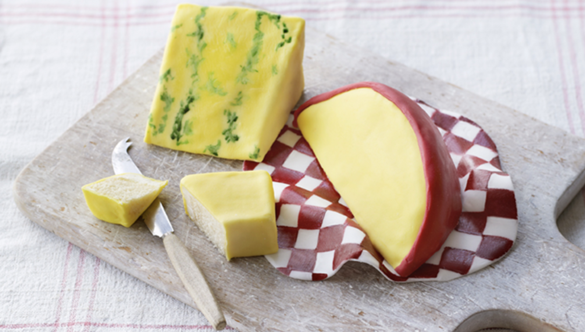
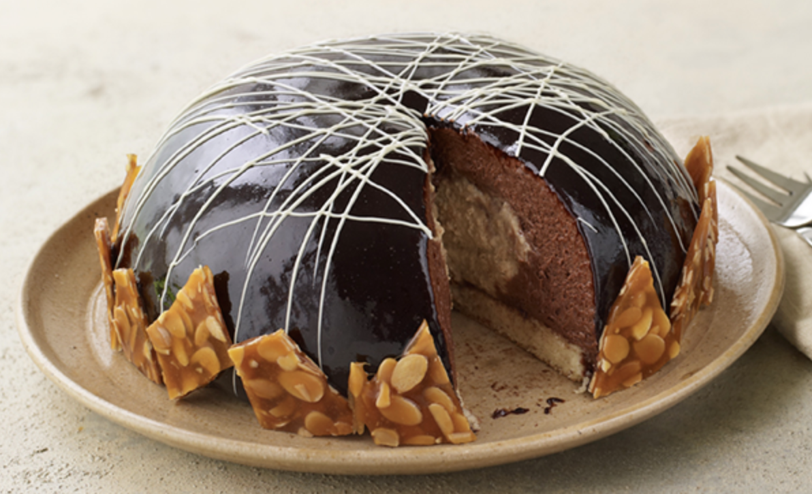
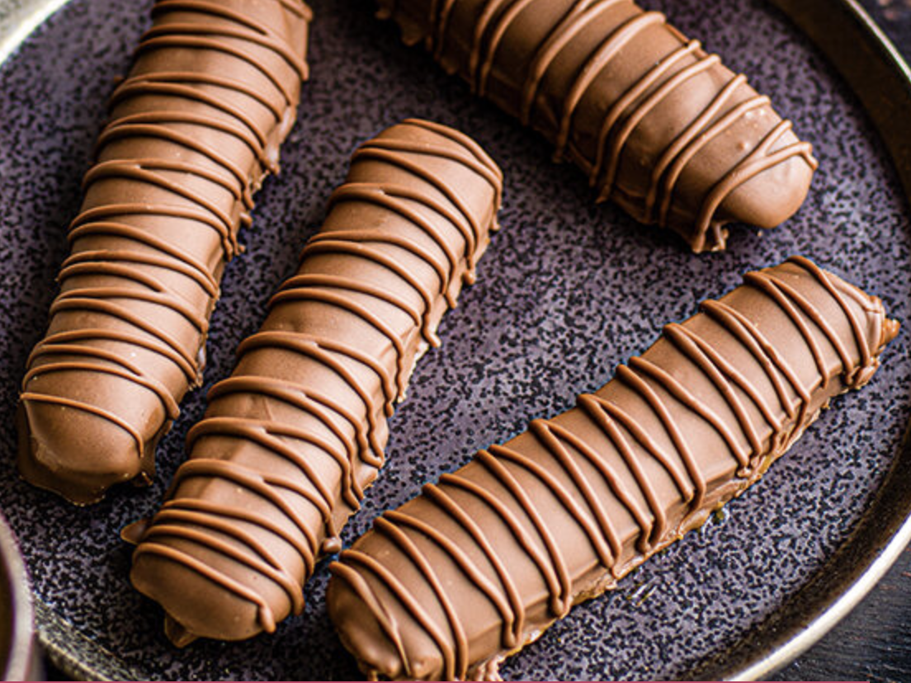
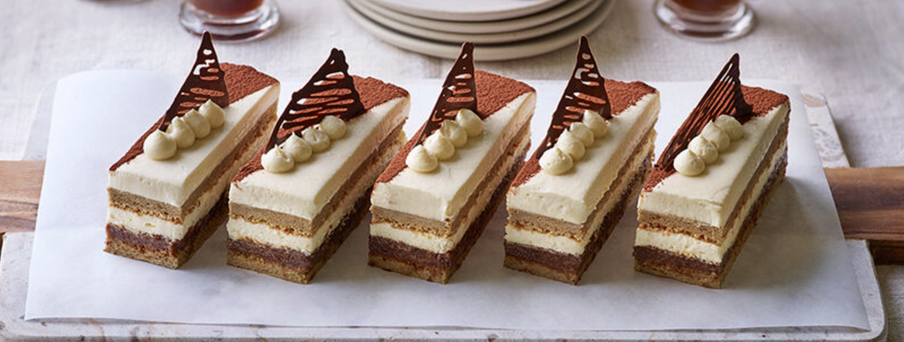
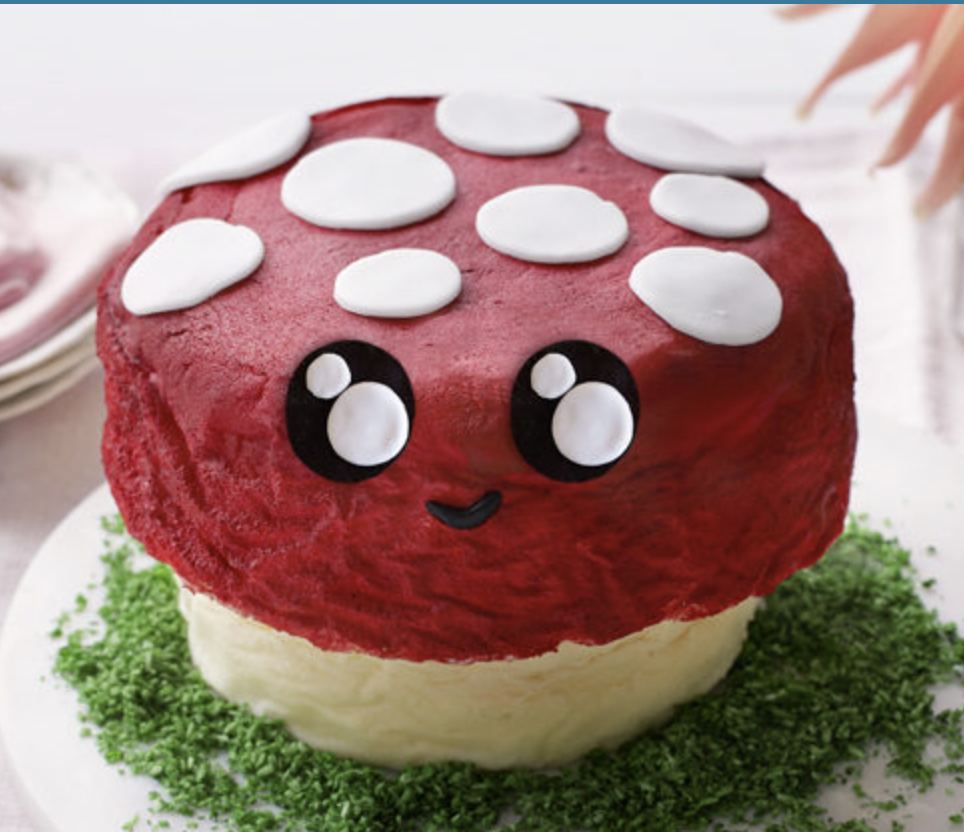

A talented batch of amateur bakers face off in a 10-week competition, whipping up their best dishes in the hopes of being named the U.K.'s best.
Bake Off 2022 is expected to air sometime at the end of September on Netflix and Channel 4, and confirmed to be judged by Paul and Prue and hosted by Matt and Noel. No information about the contestants or a release date have been given, but the first teaser trailer has.
|  Baked by Hermine in Season 11. |
 Baked by Sophie in Season 8. |
 Baked by Alice in Season 10. |
|  Baked by Jürgen in Season 12. |
 Baked by David in Season 10. |
 Baked by Steph in Season 10. |
|  Baked as Technical in Season 12. |
 Baked by Giuseppe in Season 12. |
 Baked by Lottie in Season 11. |
Deck the halls with sugar, butter and chocolate as competitors from past seasons bake sweet Yuletide treats for judges Paul Hollywood and Prue Leith.
After ten weeks of baking highs and lows, calm descends on the Baking Show tent as Mary and Paul take up the reins to make the signature, technical and showstopper challenges that they set for the bakers in each season.
Britain's most talented young bakers wow judges with cakes, biscuits, breads and more in this kid-focused spinoff of 'The Great British Baking Show.'
Celebrity bakers enter Britain's most famous tent and put their skills to the test, as they Stand Up To Cancer and inspire viewers to do the same.